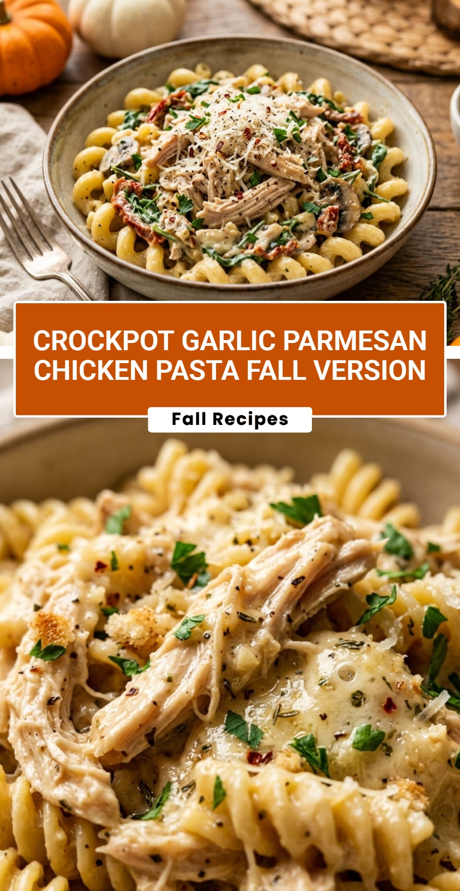

Crockpot Garlic Parmesan Chicken Pasta Fall Version
October 20, 2026

As the leaves begin to turn and the air gets crisp, there is nothing quite as comforting as a warm, creamy meal waiting for you at the end of the day. This Crockpot Garlic Parmesan Chicken Pasta Fall Version is the ultimate cozy dinner. It combines tender chicken, rich garlic parmesan sauce, and perfectly cooked pasta into a dish that feels like a warm hug in a bowl.
Recipe Information
Prep Time: 15 minutes
Cook Time: 4 hours
Total Time: 4 hours 15 minutes
Servings: 6 servings
Difficulty Level: Easy
Nutrition Information
Calories per serving: 580 kcal
Protein: 38g
Carbohydrates: 52g
Fat: 26g
Fiber: 2g
Sugar: 5g
Sodium: 920mg